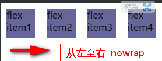
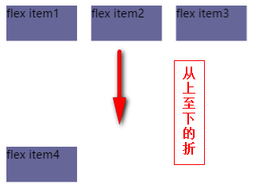
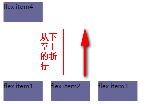
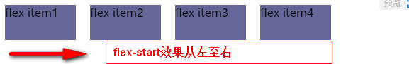
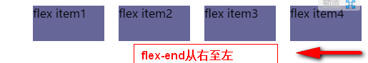
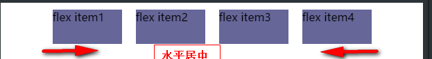
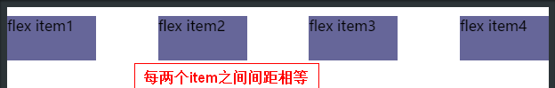
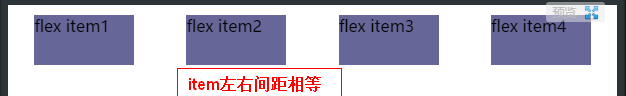

flexbox布局学习
在学习flexbox之前，先看一下w3c规范是怎样对flexbox定义的。w3c是这样说的：flexbox模型是为了实现最优化人机交互界面的布局而产生的。在flex布局模型中，在flex容器内的子元素可以在任意方向上布局，并且可以伸缩子元素的大小或者子元素占用剩余空间的大小，亦或是压缩子元素的大小以免溢出父元素。同时水平和垂直方向上的多行元素的对齐方式更容易实现。flex盒子的嵌套（包括垂直方向的盒子嵌套水平方向的盒子或者水平方向的盒子嵌套垂直方向的盒子）通常用于水平方向布局和垂直方向布局两种布局方式混合的场景。（w3c规范https://www.w3.org/TR/css-flexbox-1/）
首先，我们先看一下如何生成一个flexbox。设置块级元素或者行内元素的display属性值为flex或inline-flex，这样一个flex容器就生成了。flex容器中的子元素称为flex items。请看下图：

main axis(主轴)：是指flex布局水平方向上flex items的默认布局路线。
main start(主轴起点)|main end(主轴终点):是指flex items在主轴方向上是从起点或者终点开始布局。
main size（主轴尺寸）：是指主轴的总长度。
cross axis(交轴)：是指flex布局垂直方向上flex items的布局路线。
cross start(交轴起点)|cross end(交轴终点):是指flex items在交轴方向上是从起点或者终点开始布局。
cross size（交轴尺寸）：是指交轴的总长度。
flexbox总共包含5个属性。分别是flex-direction、flex-wrap、justify-content、align-items、align-content。
flex-direction是指定flex items布局方向的，属性值包括：row | row-reverse | column | column-reverse;
flex-wrap是指定当flex items超出总尺寸超出父容器的main size（主轴尺寸）时的折行方式。属性值包括：nowrap|wrap|wrap-reverse；
-
nowrap(默认):flex items分布在同一行，即不折行。如果父容器空间不够，子元素则压缩自身空间，直至溢出。

-
wrap：如果flex items超出总尺寸超出父容器的main size（主轴尺寸）时，flex items 会形成从上到下布局的多行元素。

-
wrap-reverse：如果flex items超出总尺寸超出父容器的main size（主轴尺寸）时，flex items 会形成从下到上布局的多行元素。

flex-flow属性是flex-direction和flex-wrap属性的简写形式。书写形式如：flex-flow:<'flex-direction'>||<'flex-wrap'>
justify-content属性是指定flex items在主轴上的分布方式。属性值包括：flex-start|flex-end|center|space-between|space-around。
-
flex-start(默认): items 挨向起点线。

-
flex-end: items 挨向终点线。

-
center：items沿着轴线居中。

-
space-between：两个相邻item之间的间距相等，起点和终点不留间距。

-
space-around: item左右两边的间距相等，起点和终点同样留间距。

align-items定义了单行元素items在交轴方向上的分布方式。属性值包括：flex-start|flex-end|center|base-line|space-around|space-between。
-
flex-start（默认）:item的外边距挨着交轴的起点线。
-
flex-end:item的外边距挨着交轴的终点线。
-
center：items沿着交轴垂直居中。
-
strech：item占据整个父元素的空间。
-
base-inline:items依照文字的基线对齐。